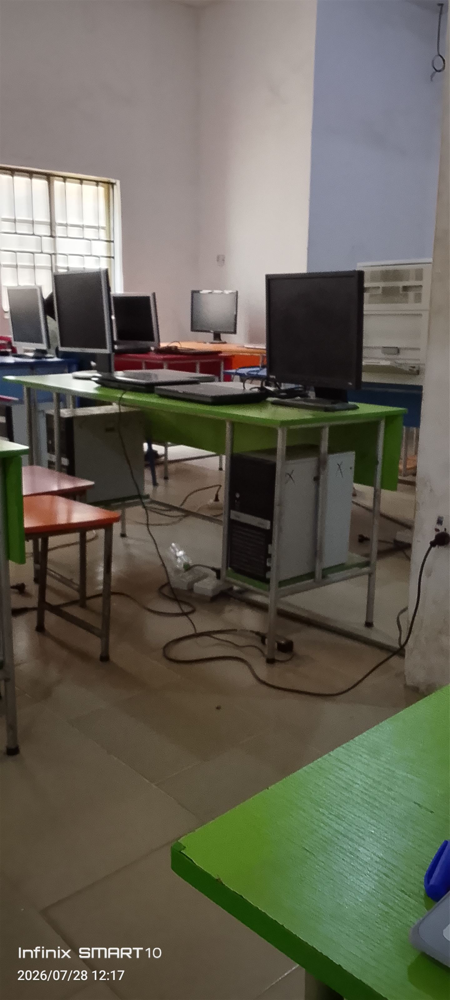

<!DOCTYPE html>
<html>

<head>
  <meta charset="UTF-8">
  <meta name="viewport" content="width=device-width, initial-scale=1">
  <title></title>
</head>

<body>
  
</body>
<div>

  <section>
    
<h1>Inspiring Tomorrow's Scientists and Innovators</h1>
<pScience and technology shape the future, and at Emeakaroha Foundation School, students gain practical knowledge through hands-on learning experiences. Our modern laboratories and computer facilities encourage experimentation, creativity, and problem-solving.
Students are exposed to STEM education that develops analytical thinking and innovation while preparing them for future careers in science, engineering, medicine, and technology.
Facilities
Fully equipped science laboratories
Modern computer laboratories
Agricultural science farms
Practical science experiments
Robotics and technology clubs (if applicable)
ICT training
Project-based learning
Why It Matters
Our programme equips students with the skills needed to thrive in a rapidly changing technological world.
  </section>
</div>
</html>